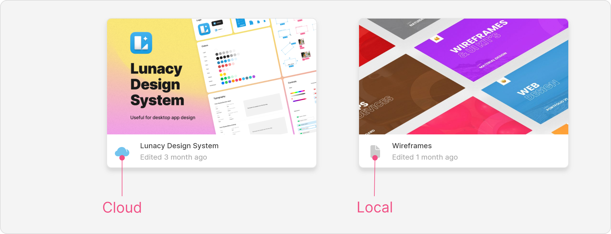
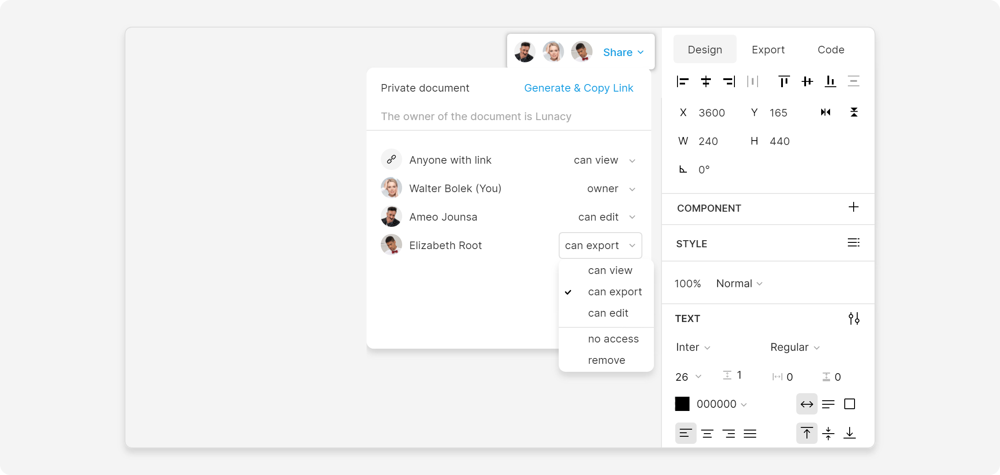
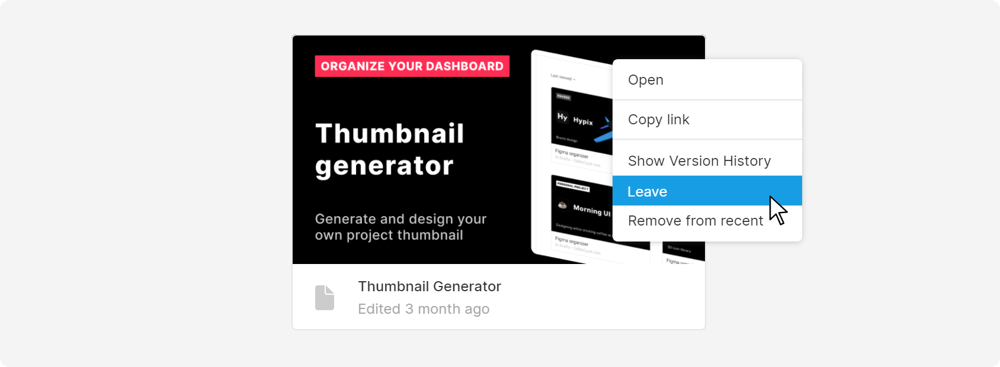
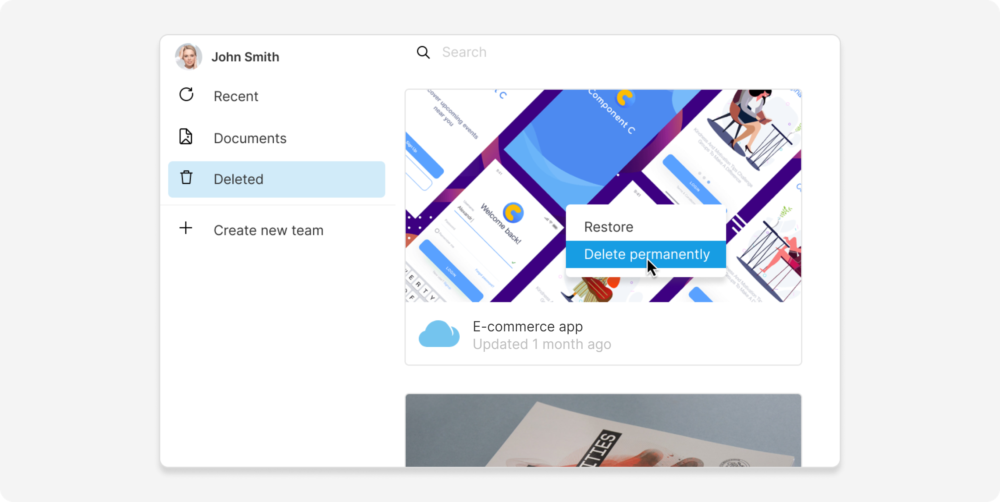
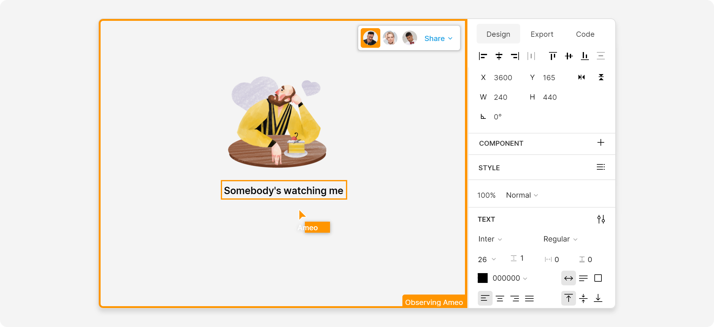
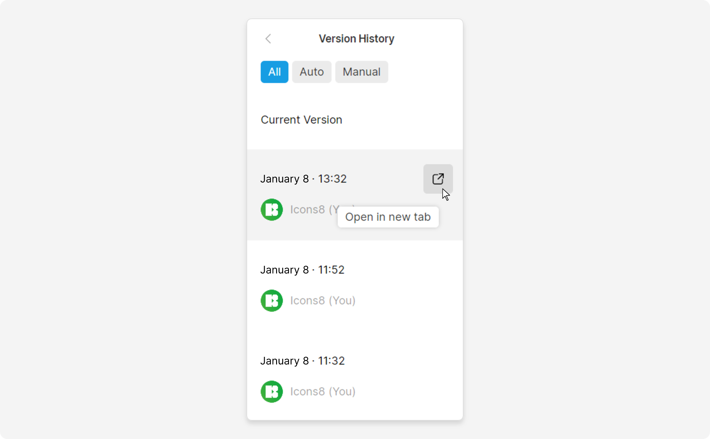
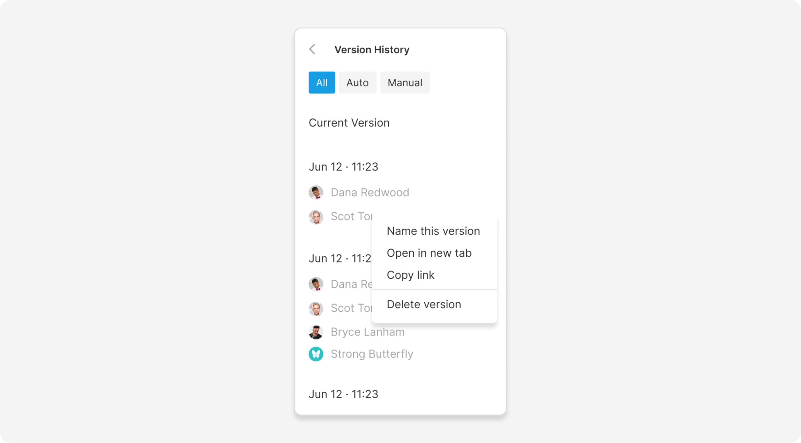

In Lunacy, you can work with local and cloud documents. You can tell them apart by the icons next to their title:
Local documents live on your computer. You can access and edit them even when offline.
Cloud documents are stored on Icons8 servers. They're accessible and editable from any computer that has Lunacy installed and is connected to the internet.
Other advantages of cloud documents include:
To create a new cloud document:
Ctrl + Shift + N / ⌘ + Shift + N.
To open a cloud document:
You can share cloud documents using both public and private links:
To share a cloud document:
When invited users access your document, their avatars show up next to the Share button. You can individually modify their access level, temporarily ban, or remove them from the list:
Personal settings override the Anyone with the link setting.
Once you're invited to the document, open it by copying its link and
pressing Ctrl + V / ⌘ + V anywhere in Lunacy.
Alternatively, you can paste the link into your browser. This will either redirect you to Lunacy or prompt you to install it on your device.
Documents shared with you appear in the Recent section of the Home tab, so you'll be able to access them anytime.
If you don't need it anymore, you can remove it from the Recent section or leave the document entirely by selecting the option on its context menu in the Home tab:
You can also remove yourself from the document in the Share panel.
To save a local version of a cloud document:
To delete a cloud document:
Deleted documents migrate over to the Deleted section of the Home tab, where you can either restore or permanently delete them. Be careful with this option.
Use the observer mode to follow the activities of other users on the canvas.
To activate it, simply click the user's avatar in the top-right corner. You will see a colored frame around the canvas, indicating that you're now observing the chosen user:
Click the user's avatar again to exit observer mode.
Lunacy automatically saves a version of your cloud document after every 100 actions.
You can also save versions manually:
Ctrl + Alt + S / ⌘ + ⌥ + S.There several ways to view a document's version history:
A panel with the list of document versions will appear on the right side of the interface:
Hover the cursor over the required version and click to open it. The versions will open as local temporary files that you can save to any folder on your computer and then import back to cloud.
You can sort document versions here by the method they were saved: click the All, Auto, and Manual buttons at the top of the panel.
For additional options, open the version history context menu by right-clicking a version. Using the menu, you can rename, open, copy the link to, or delete document versions:
Apart from cloud documents, you can expand your collaboration options with teams and unlock additional features with our paid plans.